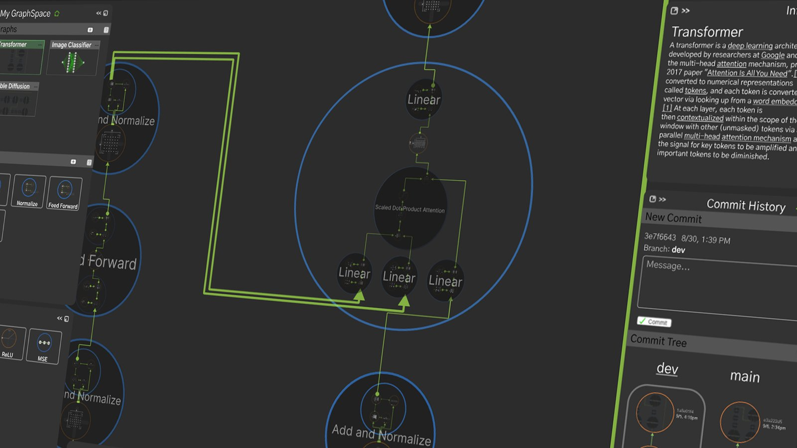
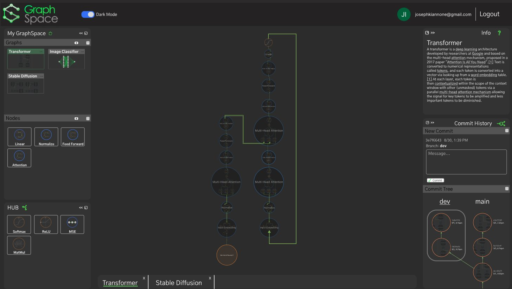
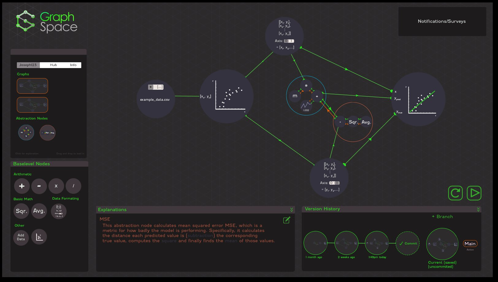
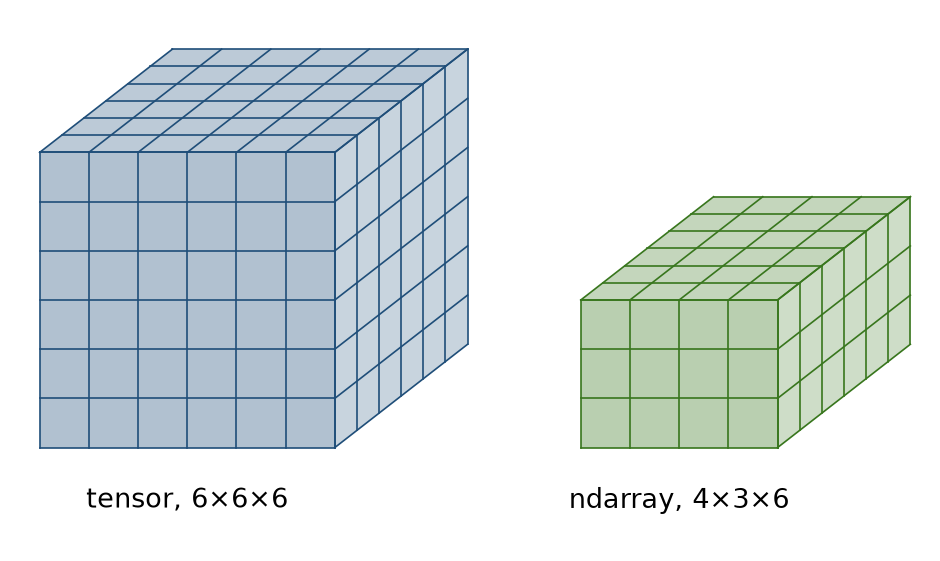
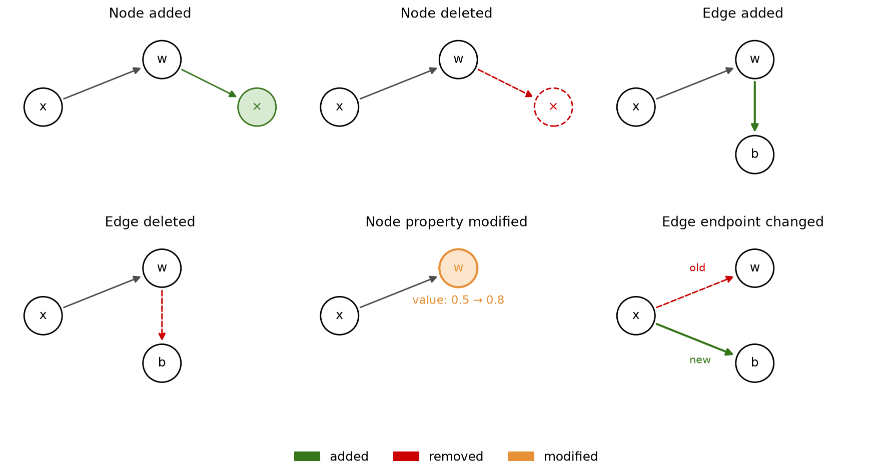

The side notes are hindsight.


It was a hot and sunny day in Seattle. I was sitting in the Suzzallo library at the University of Washington, and from what I could tell there was not another soul in the entire building. This was the summer after Covid started. It was the early morning and the sun was shining brightly, lighting up the whole floor. The cumulative value of all my accounts had just reached about $225k after a Lollapalooza of market delirium across asset classes. I was in a very confused state. I was reading the Beginning of Infinity by David Deutsch, a book about many things: what makes a good explanation, the progressing of science and technology, memetics and the spread of information in society, the spread of information in the universe, culture, how the enlightenment completely changed the course of humanity, the multiverse, AI, how life emerged, genes, and consciousness. It’s now my favorite book. The chapter that captured me the most at the time was the one on memetics, explanations on how information and behaviors spread in society. Deutsch paints a picture of an ultra-dense network of connections, where behaviors are transferred from one person/node to the next, evolving and mutating in the substrate of society. I thought this was really fascinating. Before reading this, my mind already held a loose idea of using graphs to model the economy, institutions, and people in order to predict trends in asset prices. So reading that chapter validated that idea a little bit for me. But I was too focused on other things to dive into it and possibly make something cool, so I put a pin in it.
About a year later, I started a project called Swervy Road (no longer on the app store, but shows up on some mobile game websites). It was a mobile game, the goal was for it to be a flappy-bird-like game, players would drift their car through an infinitely-generated winding road in the sky, drifting left and right, over and over, endlessly into the horizon, trying to pass as many turns as possible without falling off the side. But the game itself was irrelevant to the project, the real purpose was to test network effects. I made it have a leaderboard that was a graph/network. Users could invite others to the game, that new user, the invitee, would be connected to the invitor, creating a network of participants. The size of each user’s node represented their high score. This would ideally create an incentive for people to invite others, as they would want the most links in the network. At the time, I was reading the book, The Cold Start Problem: How to Start and Scale Network Effects, so this project was also an expression/test of what I had picked up from that (I also wanted to learn C#, so I used the project as a vehicle for that as well).
A couple months after finishing the project, it was now time to register for classes for the second-to-last quarter of my final year. To my surprise there was a newly offered class called Network Economics. Which was exactly as the name suggests, modeling different aspects of society and the economy with networks and graphs. I registered immediately. It ended up being one of the most memorable classes I had taken. It was fascinating, novel, and really refreshing. It was a big departure from the standard, academia-accepted economic calculus that I was used to. And lots of the methodology seemed applicable to real business needs. At the time I was unsure of what I wanted to work on after college, and this seemed like a good project to explore that could potentially be turned into a real business.
My first thought was a platform that would allow businesses to track how information about their products and brand spread. This would implement what I learned from the network economics class, especially a section about graph neural networks (GNNs). The general idea of a GNN is the diffusion of information (usually represented as vectors), from one node to another with some transformation of the node’s vector or the spreading information or the graph structure itself. So, for example, a node could be a user on a social media platform, and the information could be the knowledge or perception of a product. Maybe a social media influencer posts a video with a product, and then a select number of users buy it, and maybe they post about it, and some more users see it and buy it. My thought at the time was that companies would find a platform for tracking this type of thing very useful. But I never pursued this. Instead I made the mistake of widening the target market, instead of targeting a niche. I changed the idea to a general platform for building any kind of machine learning model, including GNNs. My thinking was that most ML architectures were already represented as graphs (and operated in the same way, information diffused through nodes, undergoing some type of transformation, eventually leading to an output), so the platform would be highly visual and allow users to see the exact architecture, parameters, and information diffusion of their ML models. It would be like computer-aided design (CAD) for ML.
With the idea laid out, it was time to build. I had never built a project this complex before, so I didn’t really know where to start. I viewed it as a website not a business, so I just started coding. Of all things, I begin with user authentication: user accounts, logging in/off, etc. Next, I set up the backend on AWS and had it run basic TensorFlow (TF) operations (for the first test it was a multiplication of two constants) sent to it from the client. I also went way too deep here with the AWS stuff, I setup load balancers, proxy servers, auto-scaling docker deployments. Classic premature optimization A lot of this project was marked by overcomplicating, overoptimizing, and technical debt cycles. Creating unnecessary, unvalidated features and collecting zero-benefit tools and libraries Once that was successful, it was time to create the visual interface, starting with a mockup.

This was the first mockup of the frontend interface, here the user has built a simple linear-regression model. In the bottom right there is a version control tracker where users could commit their work and create branches. Components are dragged in from the panels on the right into the main workspace and connected together. Once everything is ready, the user would click the run button to have it fit the data. The smaller nodes are contained in ‘abstraction nodes’ where one is set as a loss function and the other is the predictive function. The orange edges represent gradients from the loss node to the predict node. I should have validated the idea first with this mockup before writing a single line of code
Once the basic server stuff was in place, I decided there should be a separation of between the backend and the storing of data. I came across graph databases (databases specifically meant for working with graphs), and went with a database (DB) platform called Neo4j. This ended up not being a good decision, it forced the use of their proprietary language, Cypher, which had poor documentation and IDE support which made debugging incredibly frustrating. In addition to providing no real benefit to the platform . At this point in the project one of my friends joined to help out.
Now it was time to set up the frontend. Because the platform was going to be extremely visual and interactive, it needed something like React, but more performant (because React uses standard HTML elements, it can’t really render the type of complex structures that the platform demanded). It needed something that operated with a different type of rendering. This brought me to canvas rendering, a special DOM element that allows for the direct drawing of pixels to the browser screen (it can also utilize the client’s GPU). This is what browser-based games and platforms like OnShape use. I found a library called react-pixi, which was a React-based wrapper over a library called pixijs (lots of 2D browser games used this). At the time I thought it was standard to use a library for every little thing. I also wanted everything to be declarative instead of imperative, probably since that was the norm in web development at the time. But ultimately, this turned out to be a huge mistake At this point everything seemed to be in place, the client, the backend, and the database were all set. Now it was time to start coding.
I started with the background first. I wanted there to be an infinite grid, so the user could keep zooming in/out and panning, giving them a reference to the shapes and sizes of the ML models as well as the illusion of an infinite space. Next were the panels and a few more things for the basic features of the frontend, which my friend worked on.
Now it was time for the actual meat and potatoes: how were graphs going to be represented and sent? The first iteration of this was simple. The backend would request the graphs from the database, which would send them in the Neo4j format as a stringified JSON object, the backend would then convert that format to a format that we came up with, that was a little more intuitive, still a JSON, and then it would send that to the client. When the client made changes to the graph, those changes would be sent to the backend. So ultimately there was a copy of the graph on the backend that reflected any changes that the client made. Then came the important part: when the client pressed run, the backend would topologically sort the graph, determining the compute order of all the nodes, and then find the associated operations (usually TensorFlow ops like dot product, slicing, subtract, multiple, divide, etc..), run the associated operation for each node, using any nodes that connected into that node as inputs, until the final node was reached. Ultimately the graph was bytecode and the backend was the virtual machine that ran it. As it ran on the backend, updates would be sent to the frontend which would be displayed to the user (for example, as parameters are tuned during model training, updated parameter values would be sent to the client, allowing the client to see how the parameters changed over time).
It bothered me how inefficient this whole setup was though. Everything was stored in a JSON format, this meant lots of redundancy which wasted compute and storage. For example if a node was a multiply node, it would have a ‘nodeType’ field with its value set to ‘multiply’, both strings (and having it as an integer with an association to a node type wouldn’t be efficient either as JSON encodes all numbers as double-precision floats). And with the ultimate goal being a platform that would allow clients to create any ML model, even large GNNs with hundreds of thousands of nodes, my thinking was that things needed to be efficient. I started researching storage formats, which brought me to Cap’n Proto, which I gathered was the fastest and most efficient one (although later I would change everything over to Protocol Buffers, protobufs, due to better interoperability and tooling). These efficient storage formats worked by defining a schema (which was a dictionary of fields and their type/quantization) for each type of object you have (we had nodes and graphs), and then having that schema on both the sending and receiving end, informing how to encode/decode the object. Because any object we ended up using could now be stored in an extremely small file even for very large graphs, the database seemed unnecessary, so I decided to scrap that from the infrastructure and have everything stored on the backend as binary files produced from the protobuf encoding.
Another challenge was how values would be stored and transmitted. It’s simple and easy to store simple floats, but basically all of machine learning deals with arrays, matrices, and tensors, allowing for higher dimensional representations. So before, I changed the node ‘value’ field from a simple float to a pointer that would reference a serialized TensorFlow object (this would be in storage on the backend, and never be sent to the client). Later on, I would also create my own format using protobufs for storing multidimensional arrays (ndarrays) (TensorFlow can only serialize tensors, which are square and have the same size every dimension, e.g. 6x6x6, whereas ndarrays are rectangular, e.g. 4x3x6)

And now instead of storing everything as files in a folder on the backend, I would change it to an SQLite database. This would vastly improve retrieval speed and allow for a much more intuitive way to get data and send it to the client. And since SQLite supports binary blob storage, the graphs, nodes, edges, tensors, ndarrays, could all be stored in the same database, vastly simplifying the pipeline for retrieving and modifying graphs.
Now it was time to build out the commit tree feature. The goal here was a panel that could be panned/zoomed, showing the past history of a user’s graph/project. Creating a commit would basically be a checkpoint that the user could come back to in the project’s history and creating a branch would allow the user to have multiple versions of the project. This ended up being a very complicated feature, and since I had an unhealthy obsession with optimization, it took a while. The foundation of this is how differences were encoded between two graphs. This was important for sending updates to the backend (so the backend could maintain an identical copy of the version that the client was working on) and it was important for encoding each commit (e.g. starting with the initial graph, and recording each batch of differences all the way up to the current graph). I broke this down into all the different ways a graph could be changed: a node could be added/deleted, an edge could be added/deleted, the property of a node could be modified (e.g. its value changed), and an edge could have either of the nodes it connects changed.

I created a protobuf schema, the commit schema, that would contain an array of another protobuf schema, the differences (diff) schema. The frontend would accumulate diffs as the user worked on their projects and then on an interval, these diffs would be sent to the backend and applied to its version of the project. Similarly, the diffs would be accumulated between commits. Once the user pressed the ‘commit’ button, the diffs would be recorded in a commit protobuf and sent to the backend to be stored, while being reset to an empty array on the frontend. All of this information would be stored in a ‘project’ protobuf, containing a name, a description, the commit tree, the graph (and its node and edge protobufs since protobufs can be stored inside other protobufs). The user’s projects would be sent to the frontend upon login. This would happen after a websocket handshake with the backend, as I had updates sent through websockets instead of http (not only graph updates but updates in parameter values sent from the backend to the frontend during training to display to the user, the amount and speed of these updates made it impractical to use http).
The actual frontend workspace needed lots of improvement. It was slow and clunky. There were a host of tools trying to integrate efficiently together: Redux for state management, React for the static stuff, react-pixi for the project workspace. Once a graph arrived from the backend it would be converted to a dictionary handled by Redux and re-rendered by react-pixi when a change was detected. For example, a user could click and drag a node, changing its ‘xPosition’ or ‘yPosition’ fields slightly on every microscopic move of their cursor, resulting in the drag effect. That’s how react and react-pixi work, they maintain a tree that gets converted to the DOM (react) or canvas pixels (react-pixi). On a change to this tree, they implement the conversion. The important thing here is how a change is detected. It’s detected by a graph-traversal algorithm (depth-first search), which looks for any changes during its traversal. This means that the larger the tree, the longer the traversal time. This became a huge problem. Graphs beyond 50 nodes or so made things slow and unresponsive. The solution was to ditch react-pixi in favor of just the normal pixijs library. This way things would re-render every 16ms (targeting 60fps), and we could implement our own logic for detecting exactly what objects needed to be re-rendered. Already there was a massive speedup by converting the graph dictionary directly to pixijs sprites every interval. And then a further speed-up by having the re-render logic only look at the local diff array to see what objects (if any) had actually been modified (therefore needed re-rendering) since the last interval. Finally, since in addition to the local user changes, there would also be updates streamed in from the backend during training, there would need to be some level of parallelized rendering. For example, with the MLP model there’s hundreds of nodes that each have a chart that depicts the change over time of a parameter value. Having every render only happen one after the other would slow things down. I thought a potential solution to this was to use Web Workers. This would allow for the creation of parallel threads, outside of the main browser thread. This way a buffer that represents a canvas figure can be generated in a thread, and passed to the main thread to be immediately rendered. This was the theory but in practice it only sped things up about ~30% and added a lot of complexity.
At this point the frontend was working well. It was responsive and smooth. The bottleneck now was the backend’s training and inference speeds. When the user pressed the run button to begin training the model, the backend first had to traverse its local representation of the graph to convert it to a TensorFlow graph (this is how any ML model is run or trained, TensorFlow handles streaming a computation graph into GPU memory and running it). This meant, for each node in the graph, the corresponding TensorFlow operation needed to be instantiated, as it crawled through the topologically sorted list of nodes. In addition to TensorFlow ops, there were other operations like ‘import’ nodes, which brought in data that the user uploaded, ‘display’ nodes which displayed tensors or arrays on the frontend and had no effect on the backend, and ‘abstraction nodes’ which were containers for nodes for visual simplicity and setting groups of nodes as the loss or objective functions for training. These non-TensorFlow nodes had to have other logic than simply adding an operation to TensorFlow’s graph. Only after the TensorFlow graph was built, it could be run. If a user wanted to train a model, they would use ‘parameter’ nodes that defined tunable variables (and would be contained in a predictor abstraction node), and then define a ‘loss’ abstraction node that contained the graph for computing the difference between the label and the prediction. The backend would use a TensorFlow feature called Gradient Tape to track the gradients from Variables (corresponding to the ‘parameter’ nodes) to the loss function, this would enable the backpropagation pass during training (I also created a feature that displayed the exact backpropagation paths to the user, which I will go over later).
The problem then became sending updates to the client. When a graph is being run, TensorFlow is managing dataflow between the CPU, RAM, and the GPU. This means that in order to see what’s going on (like what the value of a certain parameter is or what the loss was on the most recent pass), the code needs a way to peek without interrupting the training. I initially tried to use the native TensorFlow function, tf.py_functions, as this would pause the training in order to run standard python code like sending a websocket event to the client for variable values and loss. But this meant it would run on every forward pass, which completely destroyed performance. I thought that maybe a polling-type design pattern would be better. Here, there would be two processes: the main process and a process that managed training. The training process would write updates to a shared buffer, while the main process would read it on an interval and send websockets events to the client. This solved the problem, as there were no longer any interruptions of the training loop. In terms of the training speed itself, there was still a lot that could be done. TensorFlow’s default computation graph is not optimized in any significant way and there’s little execution optimization. While researching how to optimize things further, I stumbled upon this article, which outlined how to use Accelerated Linear Algebra (XLA) for TensorFlow. By default, each operation in a TensorFlow graph is sent to the GPU one at a time, but with XLA, the operations are ‘fused’ so many operations can be calculated in one go before any data needs to be moved out of the GPU. The computation graph is compiled into an extremely optimized version that takes into account the specific hardware, operations, and data, leading to a significant speed up. With the MLP model, the speedup was about 3x-4x.
In progress.